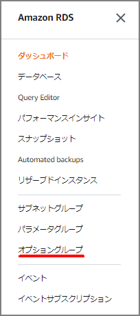
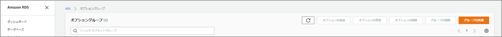
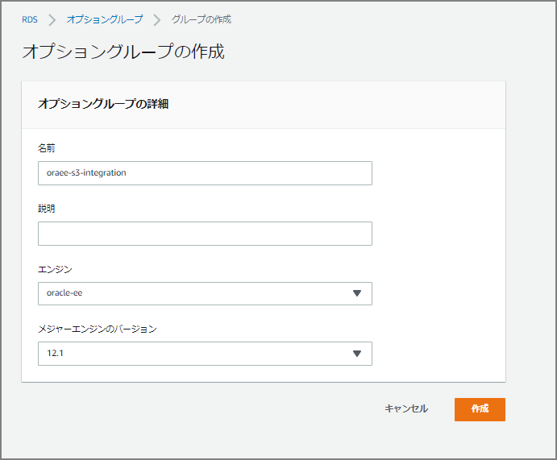
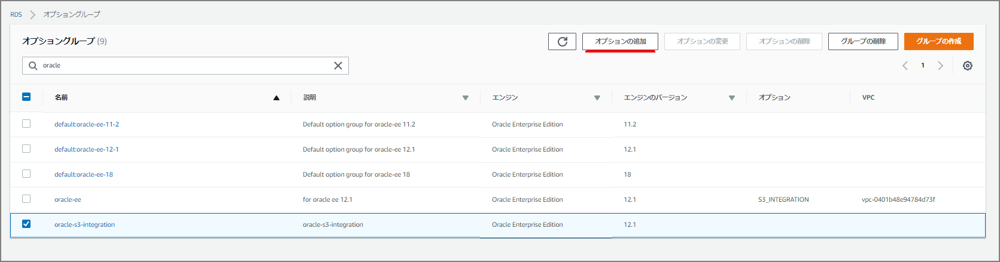
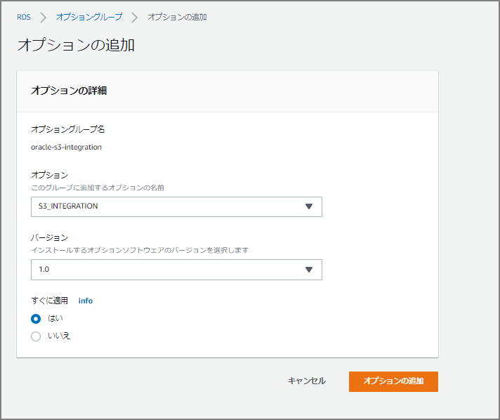
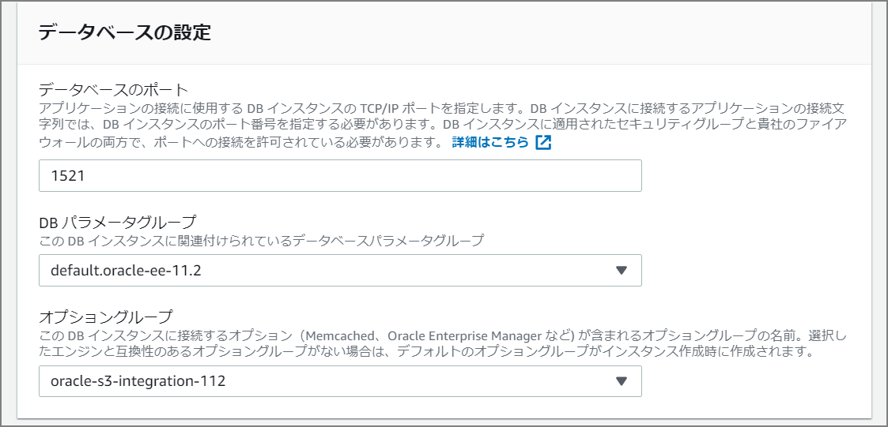

RDS(Oracle)にData Pumpでインポートする
注意事項の確認
まず始めにマニュアルを眺めてみる。データベース全体のインポートはサポートされておらず、スキーマ単位、テーブル単位でインポートを行う必要があるようだ。Amazon RDS for Oracle では、管理ユーザー SYS または SYSDBA へのアクセスは許可されていないため、full モードでインポートしたり、Oracle 管理のコンポーネントのスキーマをインポートしたりすると、Oracle データディレクトリが損傷し、データベースの安定性に影響を及ぼす可能性があります。とのこと。早くて便利なトランスポータブル表領域もサポートされていないことに注意。
Amazon RDS での Oracle へのデータのインポート - Amazon Relational Database Service https://docs.aws.amazon.com/ja_jp/AmazonRDS/latest/UserGuide/Oracle.Procedural.Importing.html
特定のスキーマやオブジェクトをインポートするには、
schemaまたはtableモードでインポートを実行します。インポートするスキーマをアプリケーションに必要なスキーマに制限します。
fullモードではインポートしないでください。Amazon RDS for Oracle では、管理ユーザー
SYSまたはSYSDBAへのアクセスは許可されていないため、fullモードでインポートしたり、Oracle 管理のコンポーネントのスキーマをインポートしたりすると、Oracle データディレクトリが損傷し、データベースの安定性に影響を及ぼす可能性があります。大量のデータをロードする場合は、ダンプファイルをターゲットの Amazon RDS for Oracle DB インスタンスに転送し、インスタンスの DB スナップショットを作成後、インポートをテストして、問題なく完了したことを確認します。データベースコンポーネントが無効の場合は、DB インスタンスを削除後、DB スナップショットから再作成します。復元された DB インスタンスには、DB スナップショットの作成時に DB インスタンス上でステージングされたダンプファイルがすべて含まれています。
Oracle Data Pump エクスポートパラメータ (
TRANSPORT_TABLESPACES、TRANSPORTABLE、TRANSPORT_FULL_CHECK) を使用して作成されたダンプファイルはインポートしないでください。Amazon RDS for Oracle DB インスタンスでは、このようなダンプファイルのインポートはサポートされていません。
Data PumpのダンプファイルをRDS内の DATA_PUMP_DIR （ディレクトリ・オブジェクト）に転送するので、一時的にRDS内の必要とされるストレージ量が多く必要なので特に注意が必要。Storage Fullにならないように注意が必要。インポート後も自動的に削除されるわけではないため、必要に応じてUTL_FILE.FREMOVEを使用した削除が必要。
Data Pumpの手法
Data Pumpでインポートする場合は、下記2つの方法がある。
S3バケットを経由したデータのインポートについて
オプショングループを作成して既存のRDS(Oracle)にアタッチする
オプショングループを選択

オプショングループの作成を行う

名前、説明、エンジン、メジャーエンジンのバージョンを選択する

グループ作成後に、オプションを追加する

「oracle-s3-integration」をオプションとして選択する。「すぐに適用」を「はい」にする。

「データベースの設定」に「オプショングループ」の指定欄があるのでさきほど作成したオプショングループを指定する。

必要なポリシー、IAMロールを作成してRDSインスタンスにアタッチする。
Amazon S3 の統合 - Amazon Relational Database Service https://docs.aws.amazon.com/ja_jp/AmazonRDS/latest/UserGuide/oracle-s3-integration.html#oracle-s3-integration.preparing
表領域の拡張
ALTER tablespace USERS resize 30G;
インポートするユーザに権限を付与
DROP USER "DPUSR" CASCADE;
CREATE USER "DPUSR" identified BY "oracle";
ALTER USER "DPUSR" QUOTA UNLIMITED ON USERS;
GRANT DBA to "DPUSR";
GRANT CREATE SESSION TO "DPUSR";
GRANT "RESOURCE" TO "DPUSR";
GRANT UNLIMITED TABLESPACE TO "DPUSR";
S3からData Pumpのダンプファイルの転送、及びインポート
事前にディレクトリオブジェクトを確認する。
set pages 2000 lin 2000
col filename for a30
col FILESIZE for 99999999999
alter session set nls_date_format='YYYY/MM/DD HH24:MI:SS';
select * from table (rdsadmin.rds_file_util.listdir(p_directory => 'BDUMP'));
select * from table (rdsadmin.rds_file_util.listdir(p_directory => 'DATA_PUMP_DIR'));
s3のバケットを指定してDATA_PUMP_DIRにダウンロードする。
select rdsadmin.rdsadmin_s3_tasks.download_from_s3(p_bucket_name => 'pluto-dev-s3-test', p_directory_name => 'DATA_PUMP_DIR') AS TASK_ID FROM DUAL;
必要に応じてログを確認する。rdsadmin.rdsadmin_s3_tasks.download_from_s3を実行したタイミングでタスクIDがコンソール上に出力されるのでそちらを確認して、rdsadmin.rds_file_util.read_text_fileの引数に指定する。
select text from table(rdsadmin.rds_file_util.read_text_file('BDUMP','dbtask-1574174424228-1248.log'));
DATA_PUMP_DIR配下にdmpファイルが配置されていることが確認できる
SQL> select * from table (rdsadmin.rds_file_util.listdir(p_directory => 'DATA_PUMP_DIR'));
FILENAME TYPE FILESIZE MTIME
------------------------------ ---------- ------------ -------------------
datapump/ directory 4096 2019/12/06 01:02:22
datapump_meta.dmp file 8237056 2019/12/06 01:02:22
dbms_datapumpプロシージャを使用してインポートする
DECLARE
hdnl NUMBER;
BEGIN
hdnl := dbms_datapump.open (operation => 'IMPORT', job_mode => 'FULL', version => 'COMPATIBLE');
DBMS_DATAPUMP.ADD_FILE( handle => hdnl, filename => 'import.log', directory => 'DATA_PUMP_DIR', filetype => dbms_datapump.ku$_file_type_log_file);
DBMS_DATAPUMP.ADD_FILE( handle => hdnl, filename => 'expdat.dmp', directory => 'DATA_PUMP_DIR', filetype => dbms_datapump.ku$_file_type_dump_file);
DBMS_DATAPUMP.START_JOB(handle => hdnl);
end;
/
データベースリンクを経由したデータのインポートについて
データベースリンクを作成する。Data Pumpのダンプファイルを転送する転送元で実施する。
drop database link ora121;
create database link ora121 connect to master identified by "Oracle2019%" using '(DESCRIPTION=(ADDRESS=(PROTOCOL=TCP)(HOST=ora121rds.xxxxxxxxxx.ap-northeast-1.rds.amazonaws.com)(PORT=1521))(CONNECT_DATA=(SID=ora121)))';
ダンプファイルを転送する。
BEGIN
DBMS_FILE_TRANSFER.PUT_FILE(
source_directory_object => 'DP_DIR',
source_file_name => 'expdat.dmp',
destination_directory_object => 'DATA_PUMP_DIR',
destination_file_name => 'expdat.dmp',
destination_database => 'ora121'
);
END;
/
転送されているか確認する。RDS側で確認。
set pages 2000 lin 2000
col filename for a30
col FILESIZE for 99999999999
alter session set nls_date_format='YYYY/MM/DD HH24:MI:SS';
select * from table (rdsadmin.rds_file_util.listdir(p_directory => 'BDUMP'));
select * from table (rdsadmin.rds_file_util.listdir(p_directory => 'DATA_PUMP_DIR'));
インポートする。
DECLARE
hdnl NUMBER;
BEGIN
hdnl := DBMS_DATAPUMP.open( operation => 'IMPORT', job_mode => 'SCHEMA', job_name=>null);
DBMS_DATAPUMP.ADD_FILE( handle => hdnl, filename => 'expdat.dmp', directory => 'DATA_PUMP_DIR', filetype => dbms_datapump.ku$_file_type_dump_file);
DBMS_DATAPUMP.add_file( handle => hdnl, filename => 'imp.log', directory => 'DATA_PUMP_DIR', filetype => dbms_datapump.ku$_file_type_log_file);
DBMS_DATAPUMP.METADATA_FILTER(hdnl,'SCHEMA_EXPR','IN (''HR'')');
DBMS_DATAPUMP.start_job(hdnl);
END;
/
必要に応じてログを確認する
SELECT TEXT FROM TABLE(RDSADMIN.RDS_FILE_UTIL.READ_TEXT_FILE('DATA_PUMP_DIR','imp.log'));
ログの削除方法
EXEC UTL_FILE.FREMOVE('DATA_PUMP_DIR','imp.log');
dbms_datapumpプロシージャを使用してインポートする
DECLARE
hdnl NUMBER;
BEGIN
hdnl := dbms_datapump.open (operation => 'IMPORT', job_mode => 'FULL', version => 'COMPATIBLE');
DBMS_DATAPUMP.ADD_FILE( handle => hdnl, filename => 'import.log', directory => 'DATA_PUMP_DIR', filetype => dbms_datapump.ku$_file_type_log_file);
DBMS_DATAPUMP.ADD_FILE( handle => hdnl, filename => 'expdat.dmp', directory => 'DATA_PUMP_DIR', filetype => dbms_datapump.ku$_file_type_dump_file);
DBMS_DATAPUMP.START_JOB(handle => hdnl);
end;
/
その他
下記にはPerlスクリプトを使って、DATA_PUMP_DIRに転送する方法がある。
Strategies for Migrating Oracle Databases to AWS
Data Migration Using Oracle Data Pump - Next Steps for a Database on Amazon RDS
[AWS] Data Pump のダンプファイルをRDS for Oracle インスタンスへ転送する ｜ Developers.IO https://dev.classmethod.jp/cloud/aws/transfer-data-pump-file-to-rds-instace/